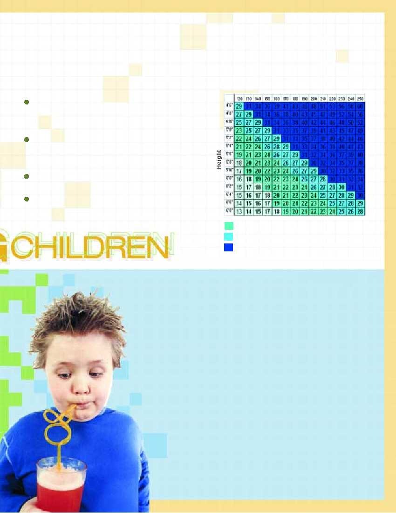

?
The Genetics Side of the Story
crisis, Americans flocked to see Super Size Me, Morgan
Spurlock's documentary about what happens when you eat noth-
ing but McDonalds' food for a month.
Recently, McDonald’s has discontinued its Super Size option and
has added fruits and salads to its menu. However, it's rival
Hardee's is still touting its new Monster Thickburger, two hockey
pucks of beef, each one-third of a pound, and three slices of
cheese plus bacon and mayo on a buttered roll. That's 1420 calo-
ries in one shot… and that's without the fries and soda. Other
changes include:
General Mills has switched from highly processed white
flour to whole grain flours in the manufacture of 29 of its cere-
al brands. (Whole grains are much richer than processed
grains in dietary fiber, which makes whole grains more filling).
Two dozen states are taking steps toward phasing out soda
and junk food in schools and replacing them with fruit, low-fat
milk, natural fruit juices, low-fat dairy products and snack
food items that have no more than 200 calories per portion.
Schools are bringing back PE classes, some insisting on a
mandatory 30 minutes of exercise per day.
Lawmakers are introducing legislation requiring schools
receiving state aid to include in their plans strategies to
decrease obesity and improve health and wellness of students.
But it's not enough!
The problem is global and the causes and solutions are complex and
involve school and families, culture, environment and genetics (see
The Genetics Side of the Story), etc. And they begin with education
and action—more exercise and less empty calories.
According to a recent article published in Nature Medicine (Vol. 10, No. 6,
June 2004), although the current environment can account for an average
weight gain of 7-10 pounds over the past decade in the United States, it is
genetics and not the environment that accounts for a proportion of the
marked differences in individual body weight. According to a study by
Jeffrey M. Friedman, head of the laboratory of Molecular Genetics at
Rockefeller University, the propensity to obesity is, to a significant extent,
genetically determined. The heritability of obesity is equivalent to that of
height and greater than that of almost every other condition—including
schizophrenia, breast cancer and heart disease.
Therefore, in at least a portion of individuals identified as obese (BMI >
30) or morbidly obese (BMI > 40), weight loss is met with
compensatory responses by these genes, which act to resist weight
change in part through a decrease in metabolism and an increase in
hunger.
A more recent study published in the April issue of Journal of
Consulting and Clinical Psychology, concluded that binge-eating and
physical inactivity played a far lesser role of predicting potential
obesity in teens than expected. Surprisingly, teens who engaged in
erratic and extreme dieting and those who showed clinical signs of
depression were more likely to become obese. But the greatest
predictor was having obese parents!
For these people help will come with the identification of the genes that
predispose to obesity and a fuller understanding of their function.
According to Centers
for Disease Control a
child with BMI
greater than the
85th percentile is
considered “at risk
of overweight,” &
one with a BMI
greater than
the 95th percentile
is considered
“overweight.”
Why is it that
most people
who lose
weight by
dieting
eventually
regain it?
4
Body Mass Index Chart
Weight (Lbs)
Healthy Weight
Overweight
Obese